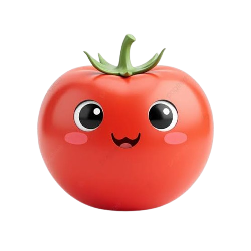

Tomaten: fruit of groente?
Tomaten zijn een populaire groente die vaak als groente wordt beschouwd, maar technisch gezien zijn ze een fruit. In deze blogpost zullen we onderzoeken wat de definitie van fruit en groente is en waarom tomaten in de ene categorie vallen en in de andere.

Volgens de botanische definitie is fruit het deel van een plant dat de zaden bevat, terwijl groente elk ander deel van de plant is, zoals bladeren, stengels en wortels. Tomaten bevatten zaden en worden daarom als fruit beschouwd. Echter, in de culinaire wereld worden tomaten vaak als groente gebruikt vanwege hun hartige smaak en veelzijdigheid in gerechten.
In oordeelde het Hooggerechtshof van de Verenigde Staten dat tomaten als groente moesten worden geclassificeerd voor belastingdoeleinden, omdat ze in de keuken als groente werden gebruikt. Dit heeft geleid tot verwarring en discussie over de classificatie van tomaten.
In conclusie, hoewel tomaten technisch gezien fruit zijn, worden ze vaak als groente gebruikt in de culinaire wereld. Het is belangrijk om te begrijpen dat de classificatie van voedsel kan variëren afhankelijk van de context en het perspectief.